【行者无疆·赓续前行】行者篇
行者无疆·赓续前行
丝路卷黄沙
塞上江南好风光
清歌遏流云
南船北马曲声扬
碧水拍江岸
绿树城郭花满巷
文溯齐鲁
知遇中原
致旅吴越
拾遗皖徽
韶忆长安
源洄渝州
言念潇湘
聆谂丝韵
寓绻淮扬
行者回首来路
山河远阔人间烟火
凛冬遇暖阳
行者们迎来新挑战
第十期行者无疆来了！
指导教师
邹靓靓
了解社会需求，锻炼自身本领。
明确发展方向，实现人生价值。
队长
温兆琪
缘起丝韵，携手淮扬，
与你同在，赓续前行。
副队长
朱华玮
我虽行过死荫的幽谷
也不怕遭害。
外联组
李春慧✦
心里装小星星
生活才能亮晶晶。
文字组
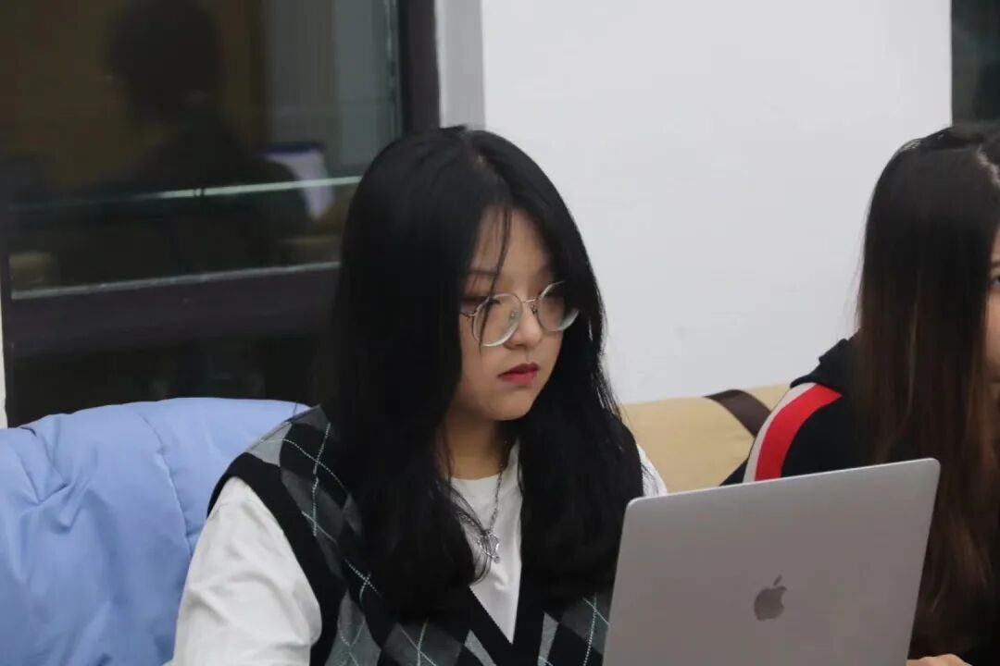
胡心怡✦
万物皆有裂痕，
那是光照进来的地方。
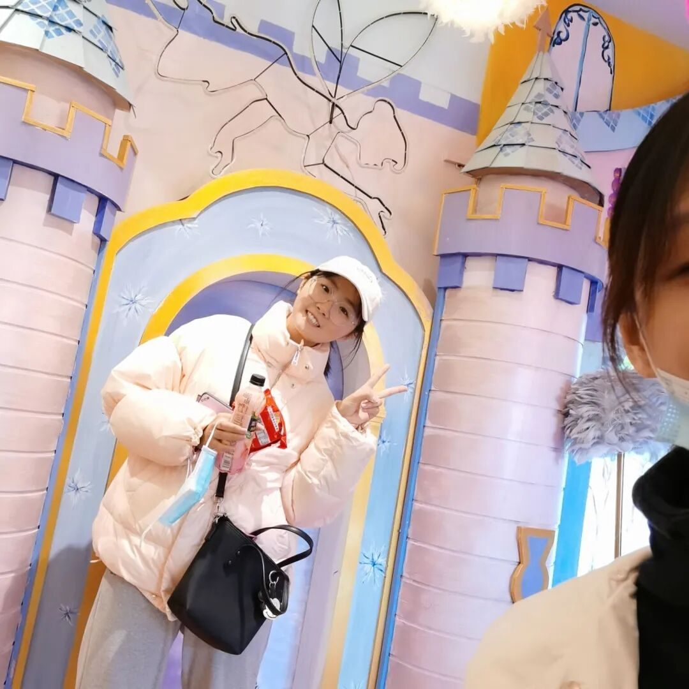
孙思涵✦
开开心心，快快乐乐。
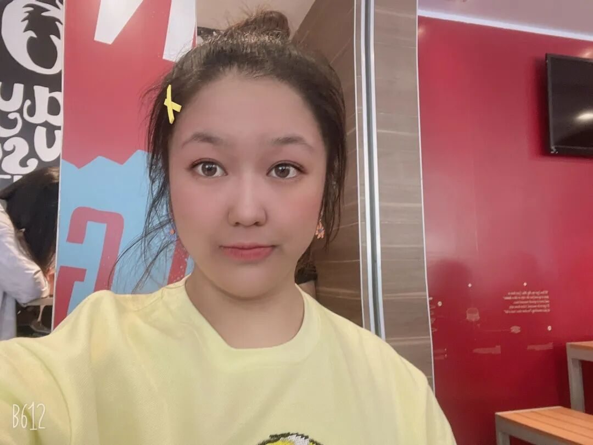
赵婉辰✦
温柔轻盈，缓慢坚定。
摄影组
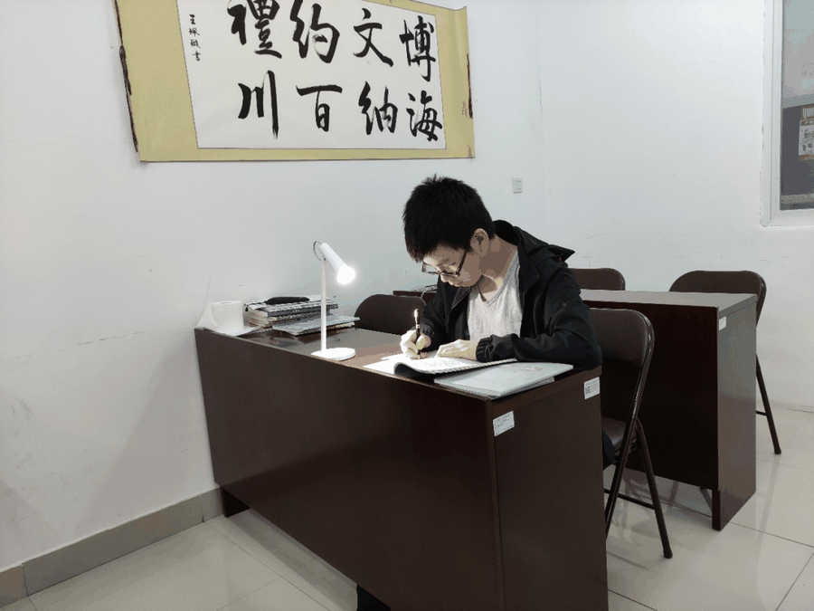
夏骏✦
With Great Power
Comes Great Responsibility.
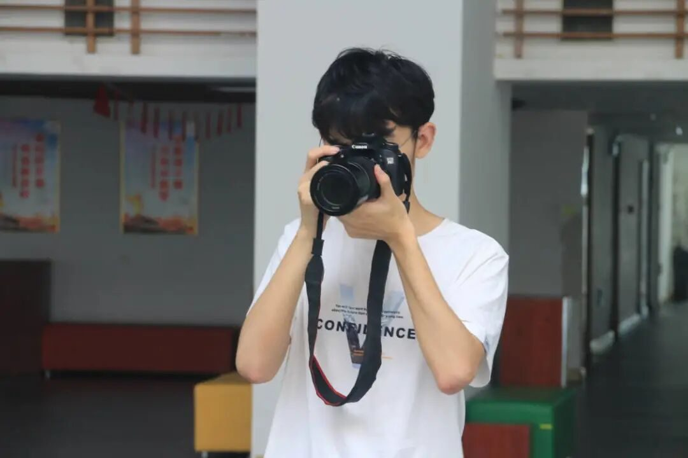
张卓凡✦
看似波澜不惊的日复一日，
会在某一天
让人看到坚持的意义。
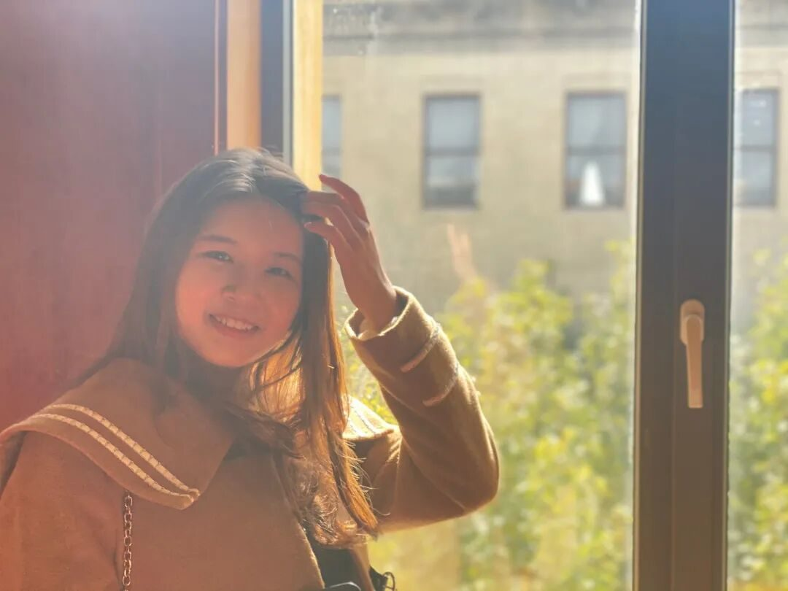
高懿玢✦
水阔山长，踏歌以航。
矢志不忘，成梦留光。
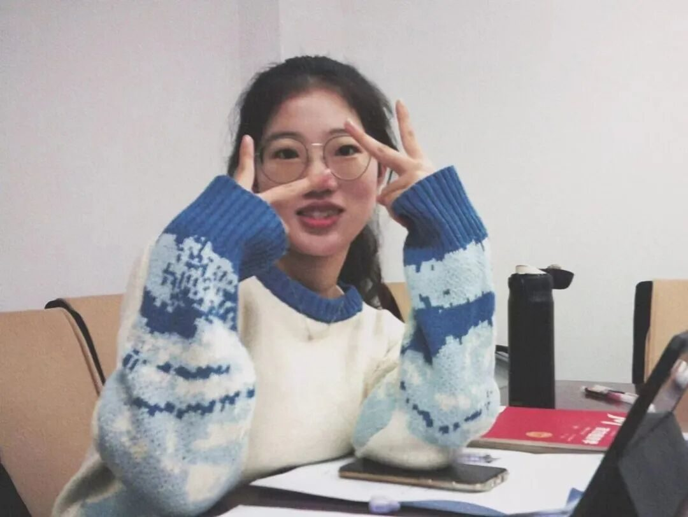
邢璐娅✦
种自己的花，爱自己的世界。
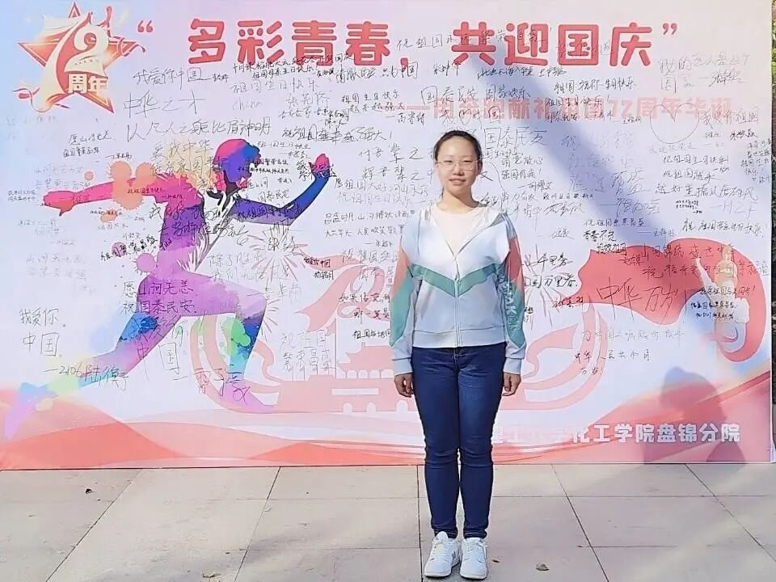
崔雨琪✦
朝暮沉淀以迎新光，
顺遂如愿忘我生长。
调研组
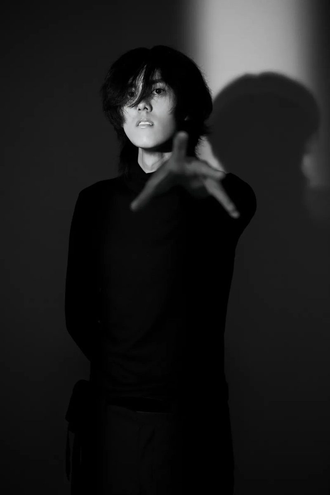
徐彦博✦
名为人生的浪潮，
如我这般的冲浪者。
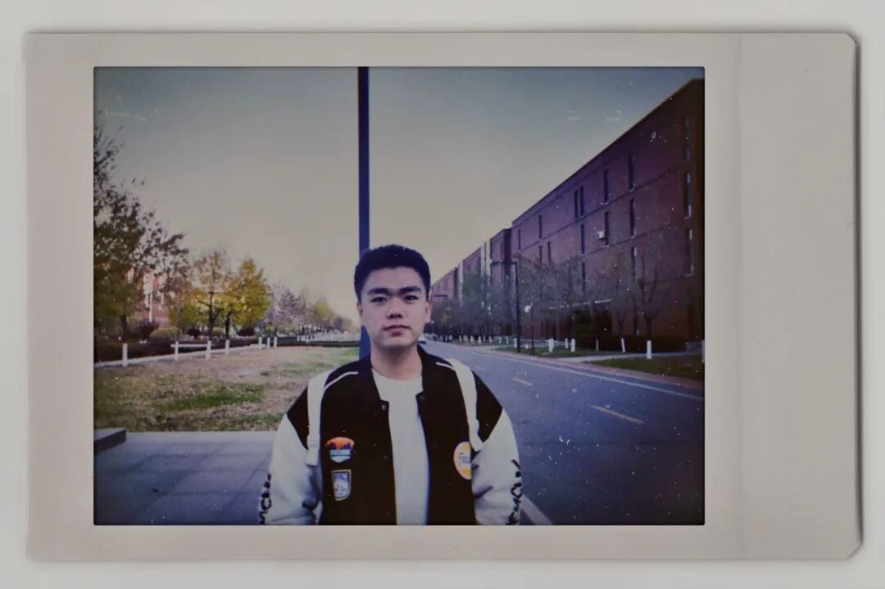
韩俊✦
保持热爱。
后勤组
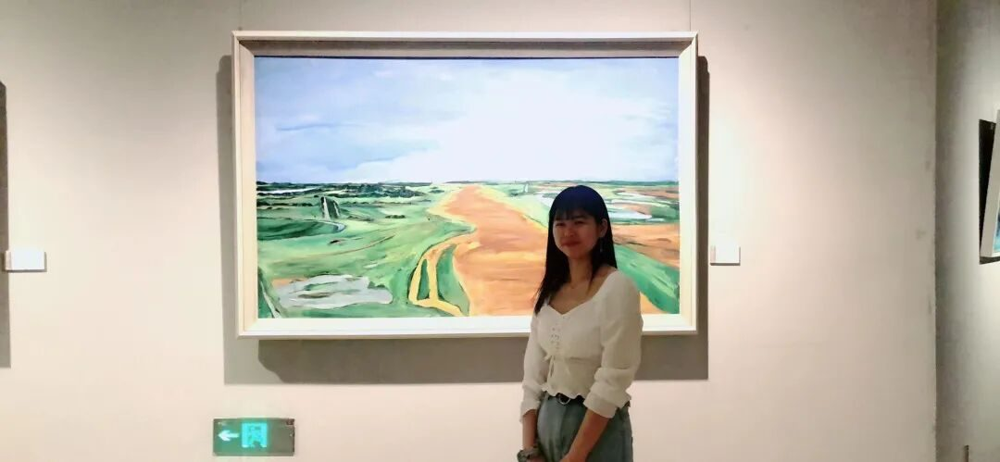
曲一鹤✦
身体和灵魂
总有一个要在路上。
采访组
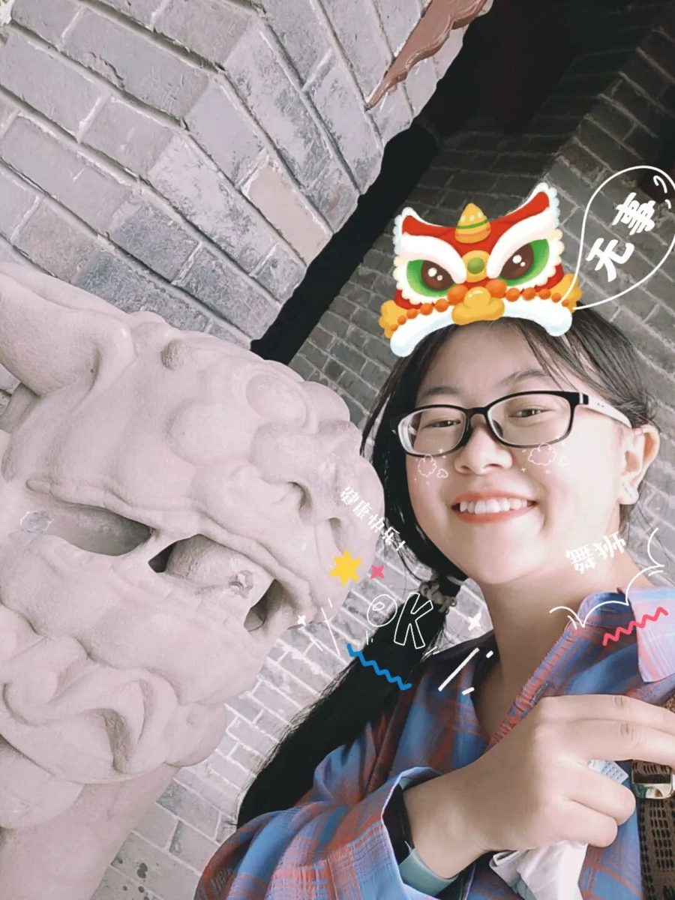
张雅妮✦
万事皆胜意！
申奥✦
食一碗人间烟火
饮几杯人生起落。
沙洲的驼铃梵音仍在耳边回响
朔风呼号风起沙落
广陵的潺潺清淼划过指尖
杨柳绿齐樱桃红破
惊堂木落曲终茶凉
大梦方觉山川依旧
邀诸君回首共寻初心
来源 | 行者无疆实践团
文字 | 行者无疆实践团
排版 | 崔雨琪 邢璐娅 高懿玢
审核 | 温兆琪 朱华玮